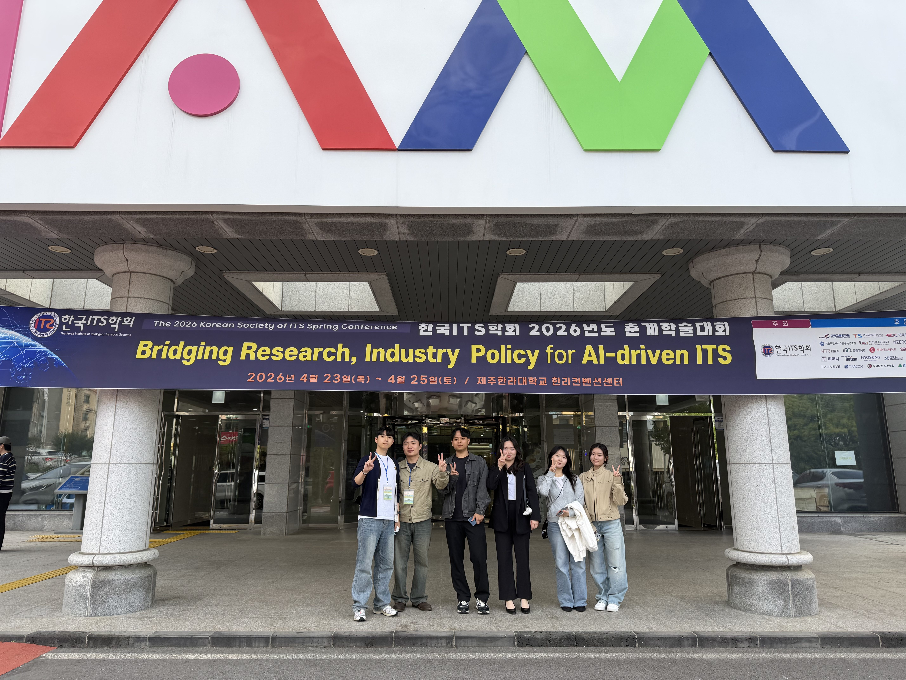

HNU AI DataScience Labs
HNU AI DataScience Labs
Big Data Applications students take part in the Korea ITS Society Conference

Undergraduate and master's students from the labs of Professors Minju Park, Jisup Shim, and Eunjeong Ko in the Department of Big Data Applications took part in the Korea ITS Society conference, where they presented the latest research trends in Intelligent Transport Systems (ITS) and shared their research achievements.
The students joined a range of sessions spanning autonomous driving, traffic data analysis, and smart mobility, gaining exposure to the latest technologies and research cases in the ITS field. Through data-driven research presentations, they built experience connecting theory with practice.
Through this conference, the students broadened their academic horizons and further strengthened their data-driven problem-solving and research capabilities.